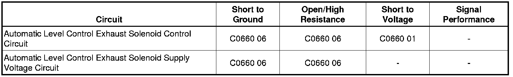

C0660
DTC C0660
Diagnostic Instructions
* Perform the Diagnostic System Check - Vehicle (Initial Inspection and Diagnostic Overview) prior to using this diagnostic procedure.
* Review Strategy Based Diagnosis (Initial Inspection and Diagnostic Overview) for an overview of the diagnostic approach.
* Diagnostic Procedure Instructions (Initial Inspection and Diagnostic Overview) provides an overview of each diagnostic category.
DTC Descriptors
DTC C0660 01
- Level Control Exhaust Circuit Short to Battery
DTC C0660 06
- Level Control Exhaust Circuit Short to Ground or Open Circuit
Diagnostic Fault Information

Circuit Description
The electronic suspension control module (ESCM) adjusts the vehicle suspension ride height. The ESCM determines the height of the vehicle based on signals from the height sensors. The ESCM raises and lowers the vehicle in order to keep the vehicle level by controlling the exhaust valve and air compressor control circuits.
Conditions for Running the DTC
* Battery voltage is between 9-16 volts.
* The exhaust valve is commanded ON.
Conditions for Setting the DTC
* The exhaust valve control circuit is shorted to voltage, ground, or open when solenoid activation is commanded ON for 2.5 seconds.
* The exhaust valve supply voltage circuit is shorted to ground or open when solenoid activation is commanded ON for 5 seconds.
Action Taken When the DTC Sets
* The electronic suspension control system will be inoperative.
* The SERVICE SUSPENSION SYSTEM message will be displayed.
Conditions for Clearing the MIL/DTC
* DTC C0660 will change from a current DTC to a history DTC on the next ignition cycle.
* DTC C0660 will be cleared from history after 50 ignition cycles.
Reference Information
Schematic Reference
Automatic Level Control Schematics (Automatic Level Control)
Connector End View Reference
Component Connector End Views (Connector Views)
Description and Operation
Automatic Level Control Description and Operation (Automatic Level Control Description and Operation)
Electrical Information Reference
* Circuit Testing (Component Tests and General Diagnostics)
* Connector Repairs (Component Tests and General Diagnostics)
* Testing for Intermittent Conditions and Poor Connections (Component Tests and General Diagnostics)
* Wiring Repairs (Component Tests and General Diagnostics)
Scan Tool Reference
Control Module References (Programming and Relearning) for Scan Tool Information
Circuit/System Verification
Ignition ON, command the Exhaust Valve ON and OFF with the scan tool output control. The exhaust solenoid valve should turn ON and OFF with each command.
Circuit/System Testing
1. Ignition OFF, disconnect the automatic level control (ALC) compressor exhaust solenoid.
2. Ignition ON, verify that a test lamp does not illuminate between the solenoid control circuit terminal A at the connector and ground.
• If the test lamp illuminates, test the control circuit for a short to voltage.
3. Verify that a test lamp illuminates between the B+ circuit terminal C and ground.
• If the test lamp does not illuminate, test the B+ circuits for a short to ground or an open/high resistance. If the circuit tests normal, test or replace the ALC compressor.
4. Connect a test lamp between the B+ circuit terminal C and the control circuit terminal A.
5. Command the exhaust solenoid ON and OFF with a scan tool. The test lamp should turn ON and OFF when changing between the commanded states.
• If the test lamp is always ON, test the control circuit for a short to ground. If the circuit tests normal, replace the ESCM.
• If the test lamp is always OFF, test the control circuit for a short to voltage or an open/high resistance. If the circuit tests normal, replace the ESCM.
Repair Instructions
Perform the Diagnostic Repair Verification (Verification Tests) after completing the diagnostic procedure.
* Air Compressor Replacement (Air Compressor Replacement)
* Suspension Position Calibration (Programming and Relearning)
* Control Module References (Programming and Relearning) for electronic suspension control module replacement, programming and setup